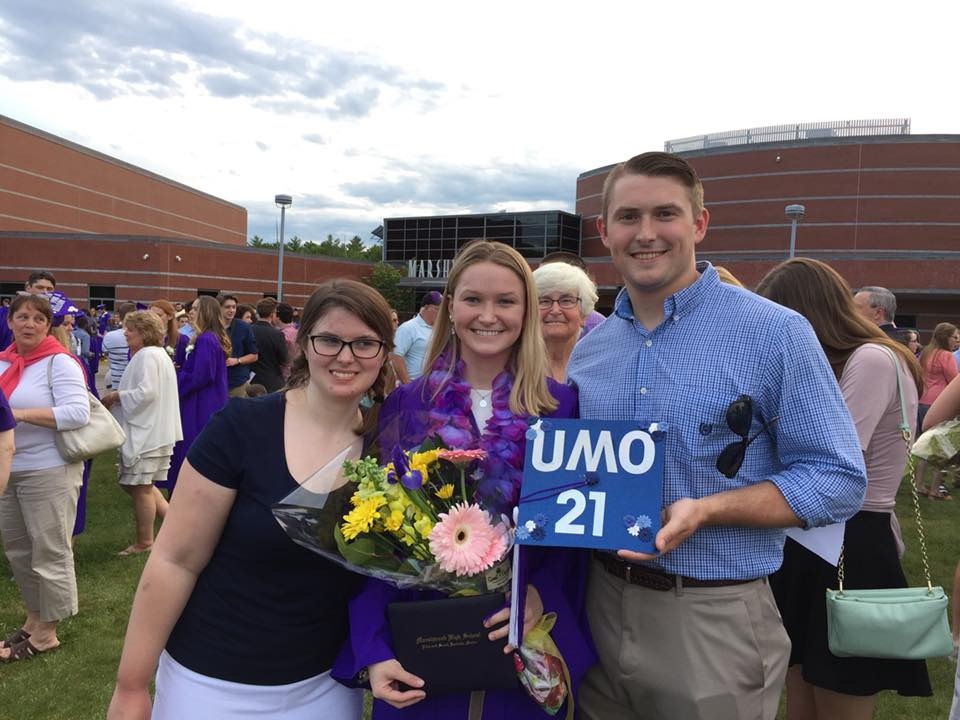
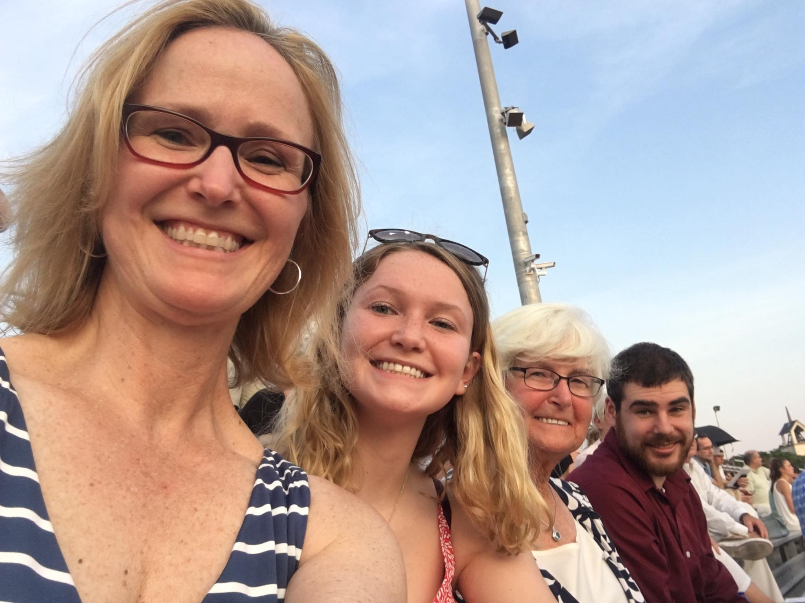

This page is dedicated to showing pictures of my family and friends.

This photo was taken at my Marshwood High School graduation back in 2017. My brother was finishing up his final semester at Husson University but still made the time to drive three hours to support me.

This is the final photo that I am going to share of my family before I move to my friends. This picture includes my cousin Gabe, Tante, and Oma. My grandmother, or Oma, moved from Germany to the United States when she was 18 years old. She first had my mother, then my Tante, and lastly my Uncle Tom. She tries to keep some of her German styles present in our lives, so we make sure to call Oma.
There are many friends both who go to Umaine and who do not that I thought about adding to this link. If I had the chance to add all of them I know that I would. Since this was not a practical descision in this case, I chose to just show my best friend. Her name is Abby and this year we will be going on 15 years of friendship. She is only a week older than me, and we share a lot of the same interests and have a lot of fun together. Although Abby doesn't go to UMaine we still have an easy time staying close.